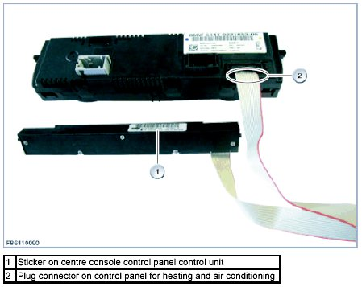

Control Assembly: Testing and Inspection
Wiring Defect, Centre Console Control Panel (SZM)
The ribbon cable leading to the heating and air conditioning control panel at the control unit for the centre console control panel (SZM) can be defective. This fault occurs with particular frequency in components produced in the period between 09/2009 and 02/2010 (refer to sticker on control unit). These components were installed in vehicles manufactured up to production dates around 06/2010.
The defect in the ribbon cable is usually located adjacent to the plug connector on the heating and air conditioning control panel.

Potential malfunctions
Any of the following malfunctions can occur, depending upon the individual vehicle's equipment level:
- Seat heater is activated and deactivated automatically.
NOTE: This malfunction can also occur when the buttons for the seat heater are integrated within the heating and air conditioning control panel.
- PDC is activated automatically while the vehicle is stationary
- E88 Series: It is periodically impossible to operate the soft top or the soft top stops in the middle of a motion sequence although the button remains depressed.
Check and fault elimination
1. Remove the control panel for the heating and air conditioning system. Do not disconnect the plug connections on the control panel.
2. Shake the ribbon cable to determine whether one of the listed malfunctions occurs.
3. If a malfunction does occur, it will be necessary to replace the centre console control panel.